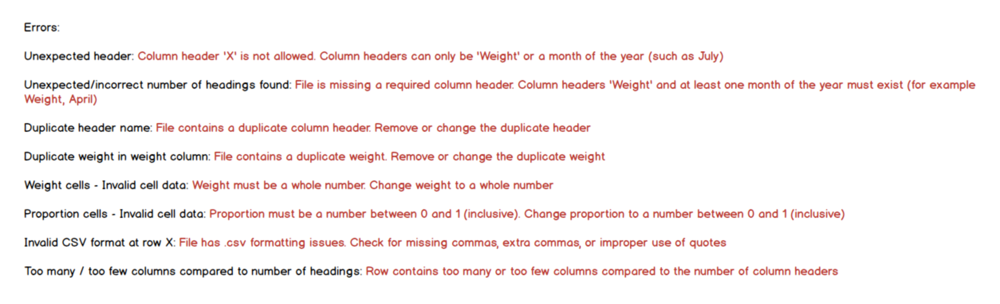
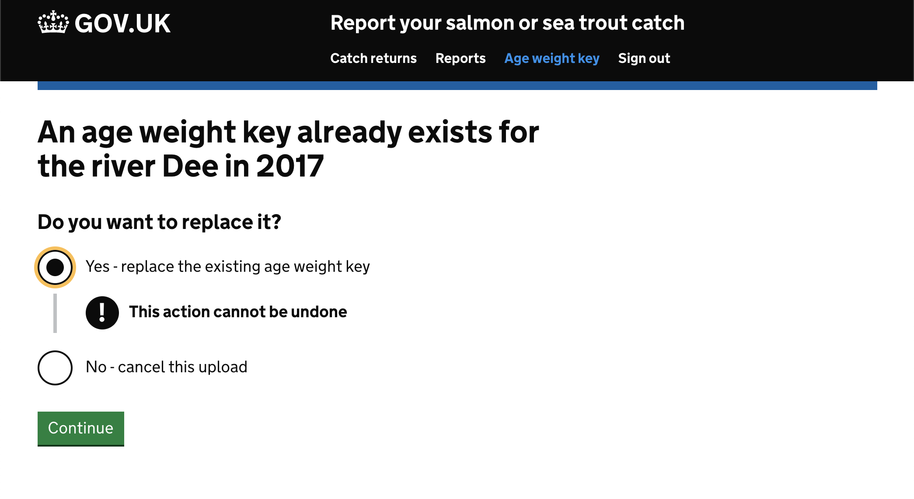

Rod Catch Returns
BackSections
IntroductionAge Weight Key
Understanding the Application
Adapting the Existing User Interface
Creating the Error Breakdown Page
Creating the Upload Conflict Page
Testing
The Completed Feature
Introduction
At the beginning of July, I re-evaluated my position; the Resource Management Tool project was giving me great experience in a number of areas but as a new application, largely working on my own receiving feedback from senior developers and colleagues, there were some areas were more experience was needed.
I raised this with my manager and asked them if there were opportunities available in other teams. The most suitable was on the 'I want to fish' team in Bristol. This would mean a considerable commute for me, and if I were expected to be present 9-5, five days a week, it would impact heavily on my work-life balance.
I discussed options with my manager, and the manager in Bristol, and agreed to work 4 days one week, 3 days the next, and repeat that pattern. This gave me a reasonable amount of time at home and time to travel between Newcastle and Bristol during office hours so as not to burn myself out.
The 'fish' team support two main services, the 'Get a Fishing Licence' service and the 'Rod Catch Returns' service. I would be starting on the 'Rod Catch Returns' service. This service is for external users to record the fish they have caught, as well as internal users to produce reports on the cumulative number of fishes caught in each river each month. Feeding into these reports is data on the probability that salmon caught in certain rivers would be of a certain type.
Age Weight Key
The senior developers on my new team decided on a piece of work that would give me a good overview of one of the two main services the team supported, this was the Age Weight Key upload feature; it involved considering an end to end user journey, along with touching on all areas of the codebase.
The feature to be developed would deal with errors encountered during the upload of the salmon probability data. The functionality to upload the data was already in place; this was a form to select a year, a file, and an overwrite option, which on submission was sent via an API call (an Application Programming Interface function) to store the data in a database. The old user interface can be seen below.
A change had already been made to the API so as to validate the file and return formatting issues, as well as other general errors, and a design document had been produced by the team's content designer, page 1 shown below; the feature needed to match this specification as closely as possible.
Understanding the Application
Before beginning to write any code, I read through the existing code to understand the flow of control through the application. I worked on a local copy of the codebase, allowing me to insert break points and console logs to see when the application ran certain blocks of code. Once I felt comfortable with the application, I began to consider how the new feature should fit into the existing code. With this in mind, I drew the UML style activity diagram below.
This highlighted the major interactions from the point of view of the code, and where conditional statements needed to be in place to bypass certain steps or add data to the cache. To better understand how this integrated with the design document, I also mapped out each possible user journey, as shown below.
Adapting the Existing User Interface
I first had to update the '/age-weight-key' view to match that in the design document; this involved adding radio buttons to select a river, changing the 'year' radio buttons into a text field, removing the 'overwrite' tick box, adding a hidden example of the expected data format, along with some changes to wording, layout and style.
Much like the ELM project spoken about earlier, as 'Rod Catch Returns' is a public facing service, GDS standard style needed to be adhered to, and GDS components were used to achieve this. Shown below is the updated '/age-weight-key' view written using Nunjucks, followed by the updated user interface, matching the design, to show how the code renders on the page.
To deal with the changes to the form data I also had to make changes to the module that validates the form data, before it's passed to the API; in accordance with the errors outlined in the design document, shown below.
This included ensuring a river was selected, that a year was entered and was within the range permitted, and that a file was selected and met all the requirements for upload. If any errors are encountered, these are added to an 'errors' Array. The code for this can be seen below on lines 18 to 45.
Once this block of code has executed, if the 'errors' Array is empty, an upload is then attempted (the API call) which returns a response Object. If this Object contains general errors, identified by the API, these are added to the 'errors' Array. If the only error contained in the Object is that the same file has already been uploaded, this will only be saved to the cache as a conflict, and not added to the 'errors' Array. The cache in this context is a temporary storage area so that information can be saved and retrieved across the session. If at the end of this function the 'errors' Array is still empty, 'null' will be returned, otherwise the 'errors' Array itself will be returned. This can be seen below, lines 47 to 80.
Control is then returned to the POST handler 'doPost' function, shown below, to decide which route to take; I updated this so that if there is a conflict it is marked in the cache, then redirects to the '/age-weight-key-conflict-check' GET route, show on line 55. If the validation module returned the 'errors' Array, it calls a function 'writeCacheAndRedirect', which writes the 'errors' Array to the cache, and redirects back to the '/age-weight-key' GET route, show on lines 67, and 68. If 'null' was returned from the validation module it redirects to the existing '/age-weight-key-ok' GET route.
I updated the GET handler 'doGet' function, shown below, so as to read the last river and year entries from the cache, to prepopulate the form, along with the list of valid rivers and years. It then calls a function 'readCacheAndDisplayView' to pass those pieces of data, the errors from the cache, and some other standard information, back to the view.
I then had to make further changes to the '/age-weight-key' view to display all the information passed to it, and present it as outlined in the design document. Some of that Nunjucks code is shown below.
This all worked towards presenting the errors to the page in the appropriate areas, as seen in the images below, along with storing the error information for future use.
There were periodic reviews of the UI with the content designer, as well as other members of the team, to ensure the user experience flowed smoothly. My code was also reviewed by senior developers on the team; positive feedback reassured me I was following the standards set by the team.
Creating the Error Breakdown Page
The next page of the design document, shown below, required a new page to be created, navigated to from the 'View all the files errors' link in the '/age-weight-key' error summary.
The first part of this feature, the upload page, seemed quite straightforward to implement. The second part, to take the complex errors Object returned by the API and transfer it to the page to match the design document, not so obvious.
To get to the solution, my first step was to retrieve the 'errorsObject' from the cache and pass it as an argument to a function, 'buildErrorItemsObject', where I could carry out the necessary transformation, and return the desired output for the page, shown below on line 136.

My next step was simply to output the 'errorsObject' to the console to better visualise the structure. The Object was made up of key/value pairs with values that were either String Arrays or Objects, these Objects again being made up of key/value pairs with values that were either String Arrays or Objects, and so on.
Each error Object would differ, depending on the errors present in the file when the upload was attempted; it would be wrong to assume the structure would be the same each time, so the first thing the 'buildErrorItemsObject' needed to do was identify the keys of any given errors Object, shown below on line 12.
I uploaded a file that contained one of each of the expected errors so as to receive a response from the API that contained the corresponding error codes to those errors. I next output these keys to the console to see the full list of possible keys, and to ensure I was dealing with a String Array.
It could be assumed that certain keys had certain value types; for example, 'generalErrors' would be a String Array, 'headerErrors' would be an Object, and so on.
I iterate through this String Array (seen above on line 14), and used a switch statement with cases for each of the possible keys (seen above on line 16); if the case expected a String Array, I output that Array to the console, if the case expected an Object, then I identified the keys of that Object, and output those to the console.
As before, this allowed me to see the full list of possible keys for that error type, and ensured I was dealing with a String Array.
I repeated the above with the next two layers of cases that expected an Object until only String Arrays were being output to the console; this meant I had reached the end of 'Objects nested within Objects', and the String Arrays being output to the console were the errors themselves rather than information relating to the error types.
I created an 'errorItems' Array (seen above on line 11) to store error items to return for displaying on the page, then I amended the switch statement cases to remove all the outputs to the console, replacing them with code to add each String Array to the 'errorItems' Array, finally I returned the 'errorItems' Array.
This 'returned Array' was passed to the '/age-weight-key-error-breakdown' view for rendering. I amended the view so as to iterate through the Array and create a simple table row displaying the error, show below on lines 18 to 30 and 45 to 56.
At this point the errors were still short Strings briefly explaining the error, or a single letter or number relating to a column or row in the uploaded file. More work was needed to turn these into meaningful statements to match the design document, shown below.

Returning to the 'buildErrorItemsObject' function, I amended each case to iterate through its String Array, and for each error create an Object with the properties of 'type' and 'message'. The messages related to those on the design document, and pulled together information from each of the layers above. An excerpt of the completed code is shown below showing some of the case statements, and the 'errorItems' returned on line 130.
For example, for an 'INVALID_PROBABILITY' error (seen above on line 110), the error itself is nested 3 layers deep so the error message takes the row number from the final layer, the column letter from the layer above, and error type from the layer above that.
These Objects were added to the 'errorItems' Array and, as before, that Array was returned at the end of the function. I amended the '/age-weight-key-error-breakdown' view again so as to iterate through the Array of Objects and create a more detailed table row displaying the error. The final result can be seen below, breaking down errors into meaningful messages that match those outlined in the design document.
Creating the Upload Conflict Page
The next page of the design document, shown below, required another new page to be created, reached after uploading a file that caused conflict to be marked in the cache, the '/age-weight-key-conflict-check' GET route mentioned earlier. In turn this required a '/age-weight-key-conflict-check' POST route to handle the form data passed by this page.
I created routes, a validator, and then handlers, all shown below.
The validator simply checks that a radio button was selected before handing control back to the 'doPost' hander. If no selection was made it redirects back to the '/age-weight-key-conflict-check' GET route to display an error.
If 'No - cancel this upload' was selected it redirects to the '/age-weight-key' GET route, and if 'Yes - replace the existing age weight key' was selected the API call to upload the file is repeated, this time with a flag to indicate that it is ok to overwrite the previous upload; it then redirects to the existing '/age-weight-key-ok' GET route.
I created the '/age-weight-key-conflict-check' view using GDS standard components, written in Nunjucks, shown in the first image below, which renders to match the design document; the finished pages are shown in the second and third images.

Testing
Throughout, the feature was developed using manual feature tests. This first image shows an attempt to reach the URL '/age-weight-key-conflict-check' and receiving an error in the browser to say the page was not found.
To resolve this error, I created the route for URL '/age-weight-key-conflict-check'.
Another attempt to reach the URL '/age-weight-key-conflict-check' presents an error in the terminal to say the route handler is not defined.
The next image shows the route handler I created to resolve this error.

Another attempt to reach the URL '/age-weight-key-conflict-check', this time presents an error in the browser to say there is a problem with the service; the second image shows the error details shown in the terminal, saying the view file for the route could not be found.
The next image shows the view file I created for the route, written in Nunjucks, and the second image shows success in reaching the URL '/age-weight-key-conflict-check'.

Unit tests were also used to ensure each possible user journey was covered, examples of which can be seen below.
The Completed Feature
The reviews of my work during the development occasionally resulted in changes to the design - like how the errors persisted when navigating to and from the error breakdown page but removed from the cache when navigating away from the age weight key pages entirely, or changing the format of some elements to more closely match government standards.
This feature was primarily delivered for internal users, for them to upload more accurate data to feed into reports. This in turn benefits higher management by improving the information available to them and helping them make better decisions on policies.
The feature having been signed off for deployment into the live environment reassures me that what I delivered met expectation, and the senior developers not having to make amendments to the code I wrote reassures me I was able it identify and follow the coding standards laid out by the team.
Back